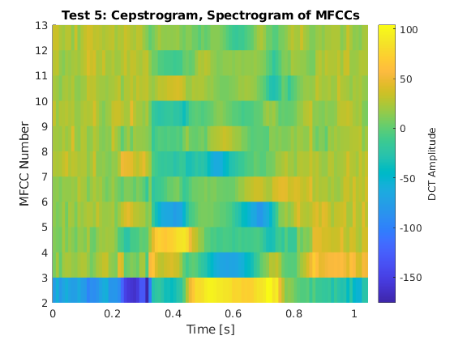
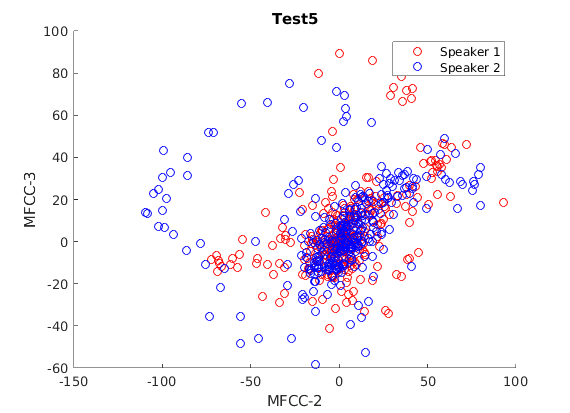

Contents
clc; clear all; close all;
Collect Training Data
numSpeakers = 11;
TrainDir = fullfile('Data','Training_Data');
TrainDataBase = cell(1,numSpeakers);
for i = 1:numSpeakers
filename = 's' + string(i) + '.wav';
[audio,Fs] = audioread(fullfile(TrainDir,filename));
TrainDataBase{i} = {audio,Fs};
end
Build Codebook for each Train Data
numClusters = 32;
numFilters = 32;
numCoeffs = 12;
frameDuration = 25;
strideDuration = 10;
classifier = speakerClassifier(numClusters,numFilters,numCoeffs,...
frameDuration,strideDuration);
codeBooks = classifier.train(TrainDataBase);
Collect Test Data
TestDir = fullfile('Data','Test_Data');
TestDataBase = cell(1,8);
TestCases = [(1:8)',randperm(8)'];
for i = 1:8
filename = 's' + string(TestCases(i,2)) + '.wav';
[audio,Fs] = audioread(fullfile(TestDir,filename));
TestDataBase{i} = {audio,Fs};
end
Classify Test Data
[testMatch,err] = classifier.classify(TestDataBase);
accuracy = mean(TestCases(:,2)==cell2mat(testMatch));
fprintf('With Train/Test dataset provided: ');
fprintf('Accuracy = %.1f %% \n',accuracy*100);
With Train/Test dataset provided: Accuracy = 100.0 %
Test Functionality
classifier.test(TrainDataBase)
Test 2: There are 20.48 ms of speech in 256 samples.
 
Test with New Voices (roommates)
roommatesDir = fullfile('Data','Roommates');
[roomTest,roomTrain] = loadRoommatesData(roommatesDir);
roomClassifier = speakerClassifier();
[~] = roomClassifier.train(roomTrain);
[roomMatch,err1] = roomClassifier.classify(roomTest);
accuracy = mean([1:4]'==cell2mat(roomMatch));
fprintf('With roommate dataset: ');
fprintf('Accuracy = %.1f %% \n',accuracy*100);
With roommate dataset: Accuracy = 100.0 %
Test Rejection Ability
TestDir = fullfile('Data','Test_Data');
TestDataBase = cell(1,8);
for i = 1:8
filename = 's' + string(i) + '.wav';
[audio,Fs] = audioread(fullfile(TestDir,filename));
TestDataBase{i} = {audio,Fs};
end
numClusters = 8;
numFilters = 32;
numCoeffs = 11;
rejector = speakerClassifier(numClusters,numFilters,numCoeffs);
[~] = rejector.train(TestDataBase);
[rejectMatch,err2] = rejector.classify(TrainDataBase,40);
expected = {1;2;3;4;5;6;7;8;"No match found";"No match found";"No match found"};
correct = 0;
for i = 1:length(rejectMatch)
try
correct = correct + (expected{i} == rejectMatch{i});
catch
end
end
accuracy = correct/length(rejectMatch);
fprintf('With rejection: ');
fprintf('Accuracy = %.1f %% \n',accuracy*100);
With rejection: Accuracy = 100.0 %
Notch Filters to test Robustness of Model
correct = 0;
for i = 1:100
r = rand;
f1 = r-0.005;
f2 = r+0.005;
if (f1 < 0)
f1 = 0.0001;
end
if (f2 > 1)
f2 = 0.9999;
end
f = [f1 f2];
[b,a] = butter(6,f,'stop');
TestDir = fullfile('Data','Test_Data');
FilteredDataBase = cell(1,8);
TestCases = [(1:8)',randperm(8)'];
for i = 1:8
filename = 's' + string(TestCases(i,2)) + '.wav';
[audio,Fs] = audioread(fullfile(TestDir,filename));
audiof = filter(b,a,audio);
FilteredDataBase{i} = {audiof,Fs};
end
[testMatch,err] = classifier.classify(FilteredDataBase);
accuracy = mean(TestCases(:,2)==cell2mat(testMatch));
if (accuracy == 1)
correct = correct + 1;
end
end
fprintf('Number of Correct results with Notch Filters: %d \n',correct);
Number of Correct results with Notch Filters: 54
Train/Test and Evaluate on voxCeleb Audio Dataset
voxPath = fullfile('Data','voxCeleb');
rng(100);
[celebTest, celebTrain] = loadVoxCeleb(voxPath,1);
celebClassifier = speakerClassifier();
[~] = celebClassifier.train(celebTrain);
[celebMatch,celebErr] = celebClassifier.classify(celebTest);
accuracy = mean([1:length(celebTest)]'==cell2mat(celebMatch));
fprintf('With voxCeleb dataset: ');
fprintf('Accuracy = %.1f %% \n',accuracy*100);
With voxCeleb dataset: Accuracy = 20.0 %